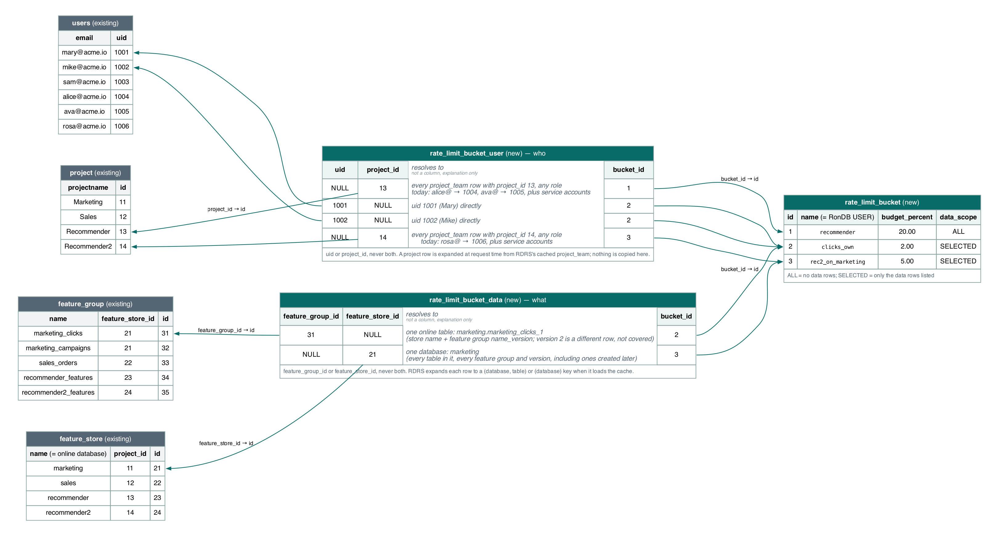
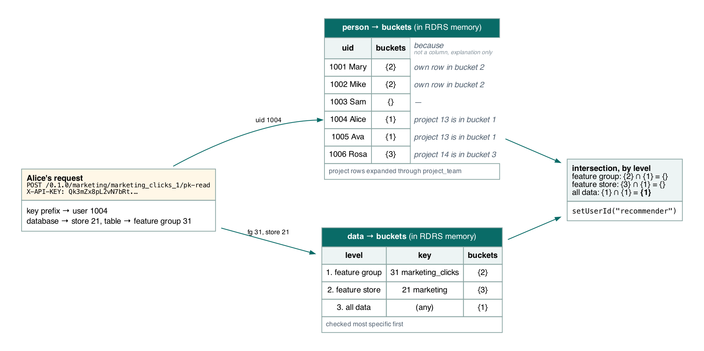
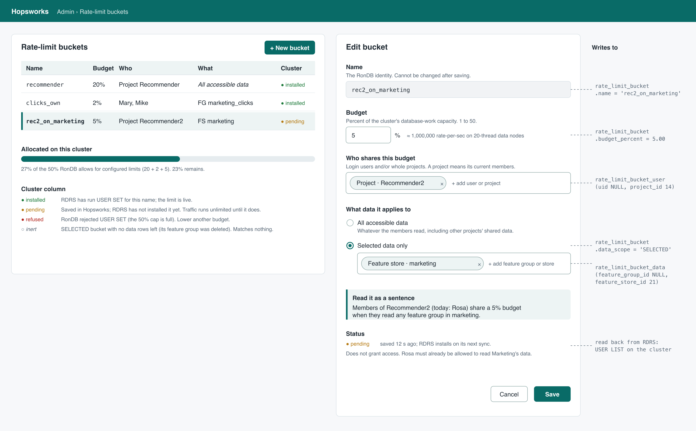
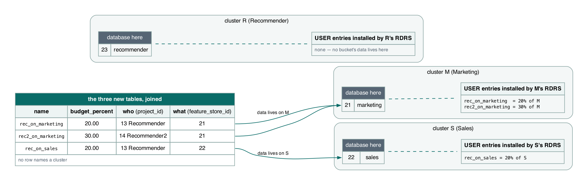

RonDB · Design proposal · October 2026
Rate-limit buckets: shared database budgets for teams
Today RonDB can limit how much database work one API key may cause. That is the wrong unit. A team has several people and each person has several keys, and what an administrator actually wants to say is “this team may use 20% of the cluster” or “this team may use 20% of our cluster when it reads our data”. This document proposes a way to say exactly that in Hopsworks.
The proposal adds one new concept, the rate-limit bucket: a named budget that a group of people share, applied either to everything they read or to specific feature groups and feature stores. Hopsworks stores buckets in three new database tables. The RonDB REST server (RDRS) reads those tables, works out which bucket each incoming request belongs to, and tags the request with the bucket’s name. RonDB then enforces the budget using the rate-limit feature it already has.
The document is built around one worked example: four projects sharing a single RonDB cluster. It shows the exact rows that get stored, how an API key is mapped to a bucket, and how the limits reach the cluster. Deployments with several RonDB clusters are covered in section 9.
1. The problem and the idea
RonDB can put a budget on a name. The command
ndb_mgm> USER SET etl_jobs --rate-per-sec = 10000means: all database work tagged etl_jobs may use about 1% of one CPU on
each data node. Today RDRS tags every transaction with the caller’s API key, so every API
key is its own budget.
Why that is not enough. Alice and Ava are the Recommender team. Alice has two API keys, Ava has one. The team should get 20% of the cluster.
- Give each key 20%? The team now has 60%, and 80% when Ava creates another key.
- Give each key 7%? Alice’s training job hits its 7% while the other two keys sit idle.
What the administrator wants to say is: “the Recommender team, together, gets 20%.”
A rate-limit bucket says exactly that. It has a name, a budget, a list of who shares it, and a list of what data it applies to. When Alice reads a table, RDRS finds the bucket that contains both Alice and that table, and tags the transaction with the bucket’s name. Everyone in the bucket draws from the same budget; one busy member can use it all.
Two things a bucket is not: it is not a permission (listing Rosa in a bucket does not let her read anything new), and it is not a reservation (20% is a ceiling, not guaranteed capacity).
2. The teams, and what Hopsworks already stores about them
The example has four projects on one RonDB cluster. Marketing has shared its feature
store with Recommender and with Recommender2. Sales has shared sales_orders
with Recommender.
| Project | Members | Feature groups it owns | Shared with |
|---|---|---|---|
| Marketing | Mary, Mike | marketing_clicks, marketing_campaigns | Recommender, Recommender2 (whole store) |
| Sales | Sam | sales_orders | Recommender (that one feature group) |
| Recommender | Alice, Ava | recommender_features | nobody |
| Recommender2 | Rosa | recommender2_features | nobody |
A feature group is a table of features. A feature store
is a project’s collection of feature groups. In RonDB a feature store is one database,
named after the project in lower case (marketing), and each feature group is
a table in it named <name>_<version>
(marketing_clicks_1).
The bucket tables refer to people, projects, and data by the ids Hopsworks already has. Here are the existing rows the examples will point at.

The shares are in shared_feature_store (store 21 → projects 13 and 14)
and shared_feature_group (feature group 33 → project 13). RDRS already reads
all of these tables to authenticate a key and to decide whether a read is allowed.
Nothing in them changes.
3. The new tables
The proposal adds three tables to the hopsworks database. They refer to
the existing rows above by id and change nothing in the existing tables. This section
explains what each table means; the column definitions are in the
appendix.
| Table | Answers the question | One row is |
|---|---|---|
rate_limit_bucket | Which buckets exist, and how big is each? | One bucket: a name, a percentage, and whether it covers all data or selected data. |
rate_limit_bucket_user | Who shares the bucket? | One person (users.uid) or one whole project (project.id). |
rate_limit_bucket_data | Which data does it apply to? | One feature group (feature_group.id) or one whole feature store (feature_store.id). |
3.1 rate_limit_bucket
nameis the string RonDB sees. RDRS tags transactions with it, and the cluster gets aUSER SET <name> …entry. Unique. Renaming would mean dropping and recreating the RonDB entry, so the UI should not allow it.budget_percentis a share of the cluster’s capacity. It is stored as a percentage, not as a RonDB rate, and converted at install time (section 7).data_scopeisALL(“whatever its members read”; the bucket has no data rows) orSELECTED(“only the data rows listed”). Section 6 explains why this is a column and not “no data rows means all”.
3.2 rate_limit_bucket_user
A row sets uid or project_id, never both. The two kinds of
row resolve to people in different ways, and the difference matters:
- A
uidrow names exactly one login user, byusers.uid. Nothing is interpreted. Row(1001, NULL)is Mary and nobody else. - A
project_idrow is a rule, not a list. It means “every user who has aproject_teamrow for this project at the moment the request arrives”. RDRS already computes that: when it authenticates a key it looks upproject_teamby the owner’s email and gets back the owner’s (project, role) pairs. The Who check for a project row is just “is this project among them”. Three consequences follow.- Every role counts. Data owner, data scientist, observer, and
feature-store-restricted members all match.
team_roleis not consulted. - Service accounts count. Hopsworks adds
onlinefsandairflow(as data scientists) andsrvmanager(as data owner) to every project’s team. They are members like anyone else, so a project row includes them. In practice only requests that reach RDRS with an API key are affected, and these accounts mostly do not make such requests, but the rule should be stated and a decision taken on whether to exclude them. - Membership changes write nothing here. When Bob joins Recommender,
RDRS sees him in bucket 1 after its next membership refresh. When Ava leaves, she
drops out the same way. The row
(NULL, 13)is unchanged in both cases.
- Every role counts. Data owner, data scientist, observer, and
feature-store-restricted members all match.
A person can match more than one row. Alice is in Recommender. If she
also joins Marketing, and Marketing has its own ALL bucket, she now matches
two buckets at the same level on every read, which is a tie. Section
6 covers how ties are prevented; the point here is that a project row’s membership is
decided by project_team, so a tie can appear through a membership change
long after both buckets were saved.
Why people and not API keys? Look at the api_key rows in
section 2: a key has a user_id and no project. RDRS already turns a key into
its owner to authenticate the request. So the question “is this key in a bucket?” becomes
“is Alice in a bucket?”, and the answer is the same for key 501, key 502, and the key
Alice creates tomorrow. API keys never appear in the new tables.
3.3 rate_limit_bucket_data
A row sets feature_group_id or feature_store_id, never both.
Each kind of row resolves to something concrete in RonDB:
- A
feature_group_idrow is one online table. Row 31 resolves to databasemarketing(the store’s name) and tablemarketing_clicks_1(the feature group’s name, an underscore, and its version). Two things follow. A feature group row in Hopsworks is one version, so if Marketing createsmarketing_clicksversion 2 that is a newfeature_grouprow with a new id, and a bucket row for id 31 does not cover it; the administrator must add it. And if the feature group is not online-enabled there is no table, and the row matches nothing. - A
feature_store_idrow is one database. Row 21 resolves to databasemarketing, and matches every table in it: every feature group, every version, including ones created after the row was saved.
RDRS does not need to parse anything at request time. When it loads the bucket
tables it expands each data row into a lookup key, (database, table) for a feature group
row and (database) for a store row, using the same two lookups it already uses to expand
fine-grained sharing grants: feature_group by id for name, version, and
store, then feature_store by id for the database name. An incoming request
names a database and a table, and those two strings are looked up directly.
A row describes data, not a sharing relationship. “Marketing caps its own use of
marketing_clicks_1” and “Recommender2’s use of Marketing’s database is
capped” are both just rows pointing at Marketing’s data. Whether a read is
allowed is still decided by the sharing tables; this table only decides which
budget pays for it.
4. The example: one cluster, three wishes
The administrator has three requirements:
- “Recommender gets 20% of the cluster, whatever its members read.”
- “Marketing’s own people may use at most 2% on
marketing_clicks.” - “Recommender2 may use at most 5% when reading Marketing’s data.”
That takes three buckets. Here is every row that gets written:

That is nine rows in total. Bucket 1 has no data rows because its scope is ALL. The three
budgets add up to 27%, under RonDB’s 50% cap (section 11).
Wish 2 shows that a team can cap its own data without any sharing involved.
Who gets charged for what
| Who reads what | Charged to | Why |
|---|---|---|
Alice reads recommender_features_1 | recommender | Alice is in project 13; bucket 1 covers all data. |
Alice reads marketing_clicks_1 | recommender | Same. Borrowed data is no different for an ALL bucket. |
Ava reads sales_orders_1 | recommender | Same bucket; Alice and Ava share the 20%. |
Mary reads marketing_clicks_1 | clicks_own | Mary (1001) is listed, and so is feature group 31. |
Mary reads marketing_campaigns_1 | no bucket | Bucket 2 lists feature group 31 only. Mary’s read is handled the ordinary per-key way. |
Rosa reads marketing_clicks_1 | rec2_on_marketing | Rosa is in project 14; store 21 contains feature group 31. |
Rosa reads marketing_campaigns_1 | rec2_on_marketing | Same store, same bucket. |
Rosa reads sales_orders_1 | rejected | Sales never shared with Recommender2. Authorization fails before any bucket is considered. |
Sam reads sales_orders_1 | no bucket | Sam is in no bucket. Ordinary per-key behavior. |
When two buckets match, the more specific one wins. Suppose Marketing
adds a fourth bucket, rec2_clicks: project 14 on feature group 31, 1%.
Rosa reading marketing_clicks_1 now matches bucket 3 (store level) and
bucket 4 (feature-group level). Feature group beats store, so she is charged to
rec2_clicks. Her reads of marketing_campaigns_1 still go to
rec2_on_marketing. The two budgets are separate: the 5% is not a cap on
her total.
5. How an API key ends up in a bucket
RDRS keeps an in-memory copy of the Hopsworks tables it needs, kept fresh in the background:
api_key, users, project_team,
feature_store, feature_group, and the sharing tables. The three
bucket tables join that list. From the bucket rows RDRS builds two lookup maps:

Alice’s request, step by step
POST /0.1.0/marketing/marketing_clicks_1/pk-read
X-API-KEY: Qk3mZx8pL2vN7bRt.<64-character secret>| Step | Lookup | Result | Status |
|---|---|---|---|
| 1 | Key prefix Qk3mZx8pL2vN7bRt → api_key row 501; verify the secret against the stored hash. | user_id = 1004 (Alice) | exists |
| 2 | 1004 → users.email = alice@acme.io → every project_team row with that team_member, any role | member of project 13 | exists |
| 3 | The request names database marketing and table marketing_clicks_1. In the cache, marketing is store 21 and (marketing, marketing_clicks_1) is feature group 31. | store 21, feature group 31 | exists |
| 4 | Is project 13 allowed to read it? Not a member of project 11; shared_feature_store has 21 → 13. | allowed | exists |
| 5 | person → buckets for 1004 | {1} | new |
| 6 | data → buckets, most specific first: feature group 31 → {2}; store 21 → {3}; all → {1} | {2}, {3}, {1} | new |
| 7 | First level with something in common with {1}: {2}∩{1} = {}, {3}∩{1} = {}, {1}∩{1} = {1} | bucket 1, recommender | new |
| 8 | setUserId("recommender") on the transaction; RonDB meters it. | tagged | exists |
Steps 5 to 7 are the new work: two map lookups and an intersection per request. Here is the same walk for the other keys from section 2:
| Key | Owner | Reads | Person’s buckets | Data’s buckets (FG / store / all) | Tagged |
|---|---|---|---|---|---|
502 Hc9t… | 1004 Alice | marketing_clicks_1 | {1} | {2} / {3} / {1} | recommender |
503 Zr5n… | 1005 Ava | sales_orders_1 | {1} | {} / {} / {1} | recommender |
504 Tp7g… | 1001 Mary | marketing_clicks_1 | {2} | {2} / {3} / {1} | clicks_own |
504 Tp7g… | 1001 Mary | marketing_campaigns_1 | {2} | {} / {3} / {1} | none; per-key as today |
505 Wd2x… | 1006 Rosa | marketing_campaigns_1 | {3} | {} / {3} / {1} | rec2_on_marketing |
Three things are worth noticing in that table. Keys 501 and 502 both belong to Alice and land in the same bucket; a third key she creates tomorrow will too, with no change to any table. Mary’s one key lands in a bucket for one table and in none for another, because the match is on (person, data), not on the key. And no API key, prefix, or secret is stored in the bucket tables.
Edge cases
- Nothing matches (Sam, or Mary on
marketing_campaigns_1): RDRS does what it does today, which is tag the API key, or nothing, depending on the configured mode. - A tie at the same level: Hopsworks refuses to save it (section 6). If a stale cache produces one anyway, RDRS picks the lower bucket id and logs it.
- One transaction, several feature groups (a feature-view read): a RonDB transaction carries one name. The proposal is to charge the whole transaction to the most restrictive matching bucket, with no splitting and no extra charge to a team-wide bucket. What “most restrictive” means when budgets are equal still needs to be written down.
- Sharing is removed: step 4 rejects the request, even though bucket rows still list the person and the data. Buckets never grant access.
6. Rules when saving and deleting
What Hopsworks checks on save
| Rule | Example |
|---|---|
| A Who row names a person or a project, not both. A What row names a feature group or a store, not both. | A row with uid = 1001 and project_id = 11. Rejected. |
Scope matches rows: an ALL bucket has no What rows; a SELECTED bucket has at least one. | clicks_own saved as SELECTED with no What rows. Allowed, but shown as inert: it matches nothing. |
No ties: two buckets at the same level of detail may not cover the same person and the same data. Levels: feature group, store, all. A person is “covered” by a project row if they have any project_team row for that project. | Bucket X: {Mary} on feature group 31. Bucket Y: {project 11} on feature group 31. Mary is in both at the same level. Rejected. (Y on store 21 instead would be fine: X is more specific and wins.) Two ALL buckets, one for project 13 and one for project 11, while Alice is a member of both. Every read by Alice would tie. Rejected. |
| Budget between 0 and 50. RonDB will not accept one entry above 50%. | A bucket at 60%. Rejected. |
The no-ties check also has to run when someone joins a project, because joining can
create an overlap that did not exist at save time: the two ALL buckets above
are both valid until Alice joins Marketing. Hopsworks then has to either refuse the
membership change with a message naming the two buckets, or accept it and mark both
buckets as conflicting on the admin page. Refusing is simpler and is the proposal; RDRS
still falls back to the lower bucket id if a stale cache produces a tie. Whether all budgets add up
under 50% is checked by RonDB when the entry is installed; Hopsworks can warn, and the sync
has to surface a refusal (section 7).
Who may create buckets is a product decision. A natural split would be that
administrators create ALL buckets, while a data owner of a store or feature
group may create SELECTED buckets on their own data.
What happens when something is deleted
The new tables use cascading foreign keys, so deleting a user, project, feature group, or store cleans up the bucket rows that pointed at it. Convenient, with one trap.
| Deleted | Example | Result |
|---|---|---|
| A bucket | Admin deletes clicks_own. | Its Who and What rows go with it. The next sync runs USER DROP clicks_own. Mary’s reads fall back to per-key behavior. |
| A person or project | Mike leaves the company; user 1002 is deleted. | His row in bucket 2 disappears. The bucket now covers only Mary. Harmless. |
| A feature group or store | Marketing drops marketing_clicks (feature group 31). | The What row in bucket 2 disappears, and bucket 2 has no What rows left. If “no rows” meant “all data”, Mary and Mike would suddenly be limited to 2% for everything they read. With data_scope = SELECTED the bucket is simply inert and the UI shows a warning. |
| Nothing, but membership changes | Bob joins Recommender. | No rows change. After RDRS’s next membership refresh, Bob’s keys land in bucket 1. |
Decision needed. Earlier drafts said “a bucket with no What rows
covers all data.” The third row above is why this draft has the data_scope
column instead. The alternative, refusing to delete a feature group while a bucket points
at it, would block ordinary feature-store cleanup because of an unrelated admin setting.
The column is the smaller cost.
7. Getting the limits onto the cluster
Tagging a transaction recommender does nothing unless the cluster has a
USER entry with that exact name. RonDB treats an unknown name as “no limit”.
So the rows in Hopsworks have to become USER SET commands on the cluster’s
management server, and this is part of the design.
RDRS is the natural place to do this: it already reads the Hopsworks tables, it already talks to the cluster, and it runs in every deployment. On a timer, it does the following:
- Reads the three
rate_limit_bucketrows. - Converts each percentage using the data nodes’ thread count. With 20 threads: 20% → 4,000,000, 2% → 400,000, 5% → 1,000,000 (section 11).
- Runs
USER LISTand fixes the differences:
A changed budget becomesUSER SET recommender --rate-per-sec = 4000000 USER SET clicks_own --rate-per-sec = 400000 USER SET rec2_on_marketing --rate-per-sec = 1000000USER ALTER; a bucket that is gone from Hopsworks becomesUSER DROP.
USER SET on an existing name followed by USER ALTER is
harmless, so several RDRS instances doing this against the same cluster do not conflict.
The loop also repairs entries lost to a cluster restart or a manual drop.
Saving a bucket does not make it active. Between the save and the next sync plus cache refresh, Alice’s reads are tagged with a name the cluster does not know yet, and run unlimited. The admin page needs to show the state (pending, installed, refused because the 50% cap is full), and the implementation has to decide whether RDRS may tag a bucket before it is installed.
8. The admin page
One page: a list of buckets on the left, and a form for the selected bucket on the right. Each form field writes to exactly one table, shown in the right margin. The list also shows the cluster state from section 7, so an administrator can see when a saved bucket has actually been installed.

rec2_on_marketing. “All accessible data” is an explicit choice that sets data_scope = ALL; leaving the selected list empty is not how you say “everything”.Three details carried from earlier sections: the name is read-only after creation
(renaming would drop and recreate the RonDB entry); the budget field shows the converted
rate-per-sec so the administrator sees what the cluster will receive; and the
sentence preview restates the bucket in words, which is the quickest check that Who and
What were filled in as intended.
9. Later: more than one cluster
Some deployments give each project its own RonDB cluster (M for Marketing, S for Sales, R for Recommender). The owner of each cluster then wants to say “Recommender may use 20% of my cluster, Recommender2 30%.” The same three tables express that with no cluster column:

Each cluster’s RDRS runs the sync from section 7 but installs only the buckets whose data is on its own cluster, which it checks by asking its own data connection whether the database exists. M installs the first two, so “20%” and “30%” are percentages of M; S installs the third; R installs nothing. The matching in section 5 is unchanged, because Alice’s request for Marketing’s data arrives at M’s RDRS, which reads the same bucket tables from the main cluster over the metadata connection it already has.
Only one thing would need a cluster name: giving an ALL bucket a different
size on one cluster (“Recommender gets 20% everywhere but 40% on R”). That would be a
fourth table, rate_limit_cluster_override (bucket, cluster name, percent),
plus a ClusterName setting in RDRS. It is in the appendix for completeness
and is not needed for a single cluster.
10. What needs to be built
| Area | Work |
|---|---|
| Hopsworks tables | Migration with the three tables (appendix); entities; the save rules in section 6; re-check “no ties” when memberships change. |
| Hopsworks admin page | Section 8, plus install state. Decide who may create ALL vs SELECTED buckets. |
| RDRS cache | Load the three tables with the existing Hopsworks metadata; build the two maps in section 5. |
| RDRS matching | Steps 5 to 7 of section 5. Specify the tie and multi-group rules. |
| RDRS sync | The loop in section 7, including what to report when RonDB refuses a USER SET. |
| RonDB | Nothing. Named limits, transaction tagging, and the USER commands are on 26.02. |
| SQL traffic | Not in a first version. MySQL tags the per-project account name, not a person. ALL buckets could cover SQL with an account → person mapping; data-scoped SQL limits need more. |
| Superuser queries | Partially shared feature groups and restricted-role queries run as a superuser today and bypass any caller-based limit. Decide: attribute them, or exempt them explicitly. |
| Several clusters | Section 9: the local-data check in the sync; optionally the override table and ClusterName. |
11. Reference: how RonDB enforces a limit
This section describes the rate-limit mechanism RonDB already has. Nothing here is new; it is the machinery that a bucket name is handed to.
A limit measures work, not requests
ndb_mgm> USER SET etl_jobs --rate-per-sec = 10000This gives etl_jobs 10,000 microseconds of accounted work per second on
each data node, which is 1% of one CPU thread. Each operation has an assigned cost:
| Operation | Approximate cost |
|---|---|
| Primary-key read | 1.25 microseconds |
| Insert, update, or delete | 4 microseconds |
| Scanned row examined | 0.75 microseconds |
| Data read | plus 1.5 microseconds per kB |
| Data written | plus 3 microseconds per kB |
So a 10,000 budget allows roughly 8,000 small primary-key reads or 2,500 writes per second per node. A value of zero turns enforcement off for that name.
Turning a percentage into a rate
rate-per-sec = budget_percent / 100 × thread_count × 1,000,000
20% on a 20-thread data node: 0.20 × 20 × 1,000,000 = 4,000,000All worker threads on a data node add to one counter per name. Each node enforces the full rate on its own work; there is no cluster-wide counter. Evenly spread work can use the budget on every node; work that lands mostly on one node hits that node’s limit first.
The 50% cap
All configured rates on a cluster may add up to at most half a data node’s capacity: on a 20-thread node, 10,000,000 per second. An entry counts toward the cap even when its owner is idle. That is why 1,000 per-key limits of 10,000 each would fill a 20-thread node completely, and why a handful of buckets is a better fit than one limit per key. Buckets do not raise the cap and do not reserve CPU for their members.
What a limited caller sees
RonDB adds up work under the name and lets the total drain at the configured rate. Short bursts pass. Sustained excess first slows work, then rejects reads, and under heavy overload rejects writes too. Rejections are temporary; callers should back off and retry. The NDB API reports error 2203 for reads and 243 for writes; SQL reports 1297 with the underlying NDB error; RDRS answers HTTP 429.
Managing names
ndb_mgm> USER ALTER etl_jobs --rate-per-sec = 20000
ndb_mgm> USER GET etl_jobs
ndb_mgm> USER LIST
ndb_mgm> USER DROP etl_jobsA name may be up to 128 bytes. RonDB stores it internally as $name so it
cannot collide with a database name; callers always use the plain name. The NDB API
attaches a name to a transaction with NdbTransaction::setUserId, which is
what RDRS uses. With ndb_user_rate_limits = ON, MySQL tags its transactions
with the connection’s login name.
A name with no configured limit runs unlimited. Matching the right bucket and installing it on the cluster are both required.
12. Appendix: proposed table definitions
In the style of the existing Hopsworks Flyway migrations (the next free number is
V96). Every id column matches the int(11) key it references. Names and
constraints are open to review.
CREATE TABLE `hopsworks`.`rate_limit_bucket` (
`id` int(11) NOT NULL AUTO_INCREMENT,
`name` varchar(63) COLLATE latin1_general_cs NOT NULL,
`budget_percent` decimal(5,2) NOT NULL,
`data_scope` varchar(10) NOT NULL DEFAULT 'SELECTED', -- 'ALL' or 'SELECTED'
`created` timestamp NOT NULL DEFAULT CURRENT_TIMESTAMP,
`created_by` int(11) NOT NULL,
PRIMARY KEY (`id`),
UNIQUE KEY `name` (`name`),
CONSTRAINT `rlb_created_by_fk` FOREIGN KEY (`created_by`) REFERENCES `users` (`uid`)
ON DELETE NO ACTION ON UPDATE NO ACTION
) ENGINE = ndbcluster;
CREATE TABLE `hopsworks`.`rate_limit_bucket_user` (
`id` int(11) NOT NULL AUTO_INCREMENT,
`bucket_id` int(11) NOT NULL,
`uid` int(11) DEFAULT NULL, -- a login user, or
`project_id` int(11) DEFAULT NULL, -- a whole project (exactly one is set)
PRIMARY KEY (`id`),
UNIQUE KEY `bucket_uid` (`bucket_id`, `uid`),
UNIQUE KEY `bucket_project` (`bucket_id`, `project_id`),
CONSTRAINT `rlbu_bucket_fk` FOREIGN KEY (`bucket_id`) REFERENCES `rate_limit_bucket` (`id`) ON DELETE CASCADE,
CONSTRAINT `rlbu_uid_fk` FOREIGN KEY (`uid`) REFERENCES `users` (`uid`) ON DELETE CASCADE,
CONSTRAINT `rlbu_project_fk` FOREIGN KEY (`project_id`) REFERENCES `project` (`id`) ON DELETE CASCADE
) ENGINE = ndbcluster;
CREATE TABLE `hopsworks`.`rate_limit_bucket_data` (
`id` int(11) NOT NULL AUTO_INCREMENT,
`bucket_id` int(11) NOT NULL,
`feature_group_id` int(11) DEFAULT NULL, -- one feature group, or
`feature_store_id` int(11) DEFAULT NULL, -- a whole feature store (exactly one is set)
PRIMARY KEY (`id`),
UNIQUE KEY `bucket_fg` (`bucket_id`, `feature_group_id`),
UNIQUE KEY `bucket_fs` (`bucket_id`, `feature_store_id`),
CONSTRAINT `rlbd_bucket_fk` FOREIGN KEY (`bucket_id`) REFERENCES `rate_limit_bucket` (`id`) ON DELETE CASCADE,
CONSTRAINT `rlbd_fg_fk` FOREIGN KEY (`feature_group_id`) REFERENCES `feature_group` (`id`) ON DELETE CASCADE,
CONSTRAINT `rlbd_fs_fk` FOREIGN KEY (`feature_store_id`) REFERENCES `feature_store` (`id`) ON DELETE CASCADE
) ENGINE = ndbcluster;
-- Only for multi-cluster deployments that want a different ALL-bucket size per cluster (section 9).
CREATE TABLE `hopsworks`.`rate_limit_cluster_override` (
`bucket_id` int(11) NOT NULL,
`cluster_name` varchar(63) COLLATE latin1_general_cs NOT NULL,
`budget_percent` decimal(5,2) NOT NULL,
PRIMARY KEY (`bucket_id`, `cluster_name`),
CONSTRAINT `rlco_bucket_fk` FOREIGN KEY (`bucket_id`) REFERENCES `rate_limit_bucket` (`id`) ON DELETE CASCADE
) ENGINE = ndbcluster;The “one of two columns is set” rule and the “no ties” rule are enforced in application code, as the existing sharing tables do; the unique keys prevent duplicate rows.